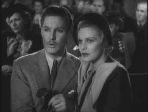

|
39
Steps/A,A- |
|
Voyager/1935/124m/FS
1.33 |
"What is the 39 steps? Come on answer up! What is the 39 steps?" is the cry of Richard Hannay. Hannay is the everyman hero of Alfred Hitchcock's wonderful 1935 action thriller,
The 39 Steps. The quintessential Hitchcock innocent, Hannay
is sucked into a hive of intrigue pursued by a swarm of nasty spies. Before all hell breaks loose
in the audience of a music hall, Richard Hannay asks the act, Mr. Memory: "How far is Winnipeg from Montreal?" The innocuous question is posed three times by Hannay
and foreshadows another question. When gunshots go off in the
theater, the crowd panics through the exit and an exotic woman latches onto Hannay, seeking refuge in his apartment. Hannay's apartment is a reflection of the character. There are no clues about his identity. The only thing we will find out about Hannay is what we learn from his actions in
The 39 Steps. Hannay, a mystery at the center of a mystery is shadowy conceit.
 |
| A tough
audience. ©Voyager |
Hitchcock
wastes no time in drawing the viewer into his adventure. Hannay
is trapped by the situation and reacts to every circumstance.
It's a race against time and some nasty enemies before Hannay
gets a chance to save the day. Though the film is 60 years old,
the style is very modern. Hitchcock takes his time and moves
with a quick step.
Many
elements of future Hitchcock thrillers evolve from The 39
Steps. The theme of an innocent man drawn into a nightmare
is a favorite Hitchcockian element. The banter between Hannay and Pamela resembles dialog that might bring a comedy to life; yet, the tone of
The 39 Steps remains serious.
Hitchcock's fascination with grand venues
Hitchcock set up many visual link with compositions or situations that hint at events to come. Take a look at the shot of the hands of Annabella Smith and Hannay when he takes the map from and see if it reminds you of a later plot element? Think about Hannay's question for Mr. Memory and how it reflects on the later action.
Robert Donat, playing Hannay, is a terrific everyman.
He is dashing, yet a regular man. Charming, resourceful and
determined, Donat makes a great Hitchcock hero. It's hard to
believe this is the same actor who a couple of years later made the shy school teacher, Mr.
Chips a signature role. Donat played the adventurer in a number of other films like
The Adventures of Tartu, Knight Without Armor, or Edmond Dantes in
The Count of Monte Cristo. Madeleine Carroll makes a
spiffy Pamela, a paradigm of the modern Hitchcock heroine.
I
have never seen The 39 Steps look so good. The
Criterion team has managed to hunt down excellent elements and
with judicious use of digital paintbox techniques, they have
made a sparkling transfer to DVD of this marvelously
entertaining film. The images are sharp, and contrast, even in
the more difficult scenes, is very well handled. If I had the
slightest qualm about the transfer, I might have liked a bit
more contrast punch, but that's a quibble. All important shadow
detail is maintained meticulously. The soundtrack is thin, but
clean and without hiss.
The audio commentary delivered with a narrow range of expression by Hitchcock scholar Marion Keane often cites little more than a description of the scenes or the actor's. Commentary on Hitchcock's visual style is never fully explored, but they are at least a jumping off point to thinking about the stylistic flourishes that make Hitchcock unique. A
documentary, The Art of Film: Vintage Hitchcock is included as a
bonus. It's not in very good shape, but it does offer a wealth
of Hitchcock early film clips. There's also a nostalgic
recording of the Lux Radio Theater adaptation of The 39 Steps
starring Robert Montgomery and Ida Lupino. The 39 Steps is a
first class DVD package.
|
|